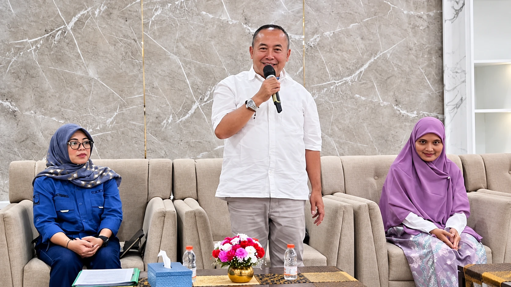

Dapil Jawa Timur IV
Bersama Cak Ali,
membangun
Jawa Timur dari desa.
Berangkat dari dunia usaha, Cak Ali ingin mendengar aspirasi warga, memahami kebutuhan, dan mendorong solusi nyata untuk Jawa Timur yang lebih maju dan sejahtera.
- Dengar AspirasiLangsung dari Warga
- Dorong Ekonomiyang Lebih Kuat
- Buka Peluanguntuk Anak Muda
Kenalan dengan Cak Ali

Pengusaha dan pengurus KADIN yang tumbuh di Tapal Kuda, dekat dengan warga dan paham dunia usaha.
Cak Ali percaya kemajuan daerah lahir dari kolaborasi antara masyarakat, dunia usaha, dan pemerintah. Karena itu ia memilih turun langsung: datang ke desa, mendengar, lalu memperjuangkan solusi bersama warga Bondowoso, Situbondo, dan Banyuwangi.
Kenal Lebih Dekat- Turun langsung Datang ke desa, duduk bareng warga, mencatat sendiri.
- Terbuka & amanah Aspirasi dicatat, ditindaklanjuti, dan dikabarkan kembali.
- Paham dunia usaha Berpengalaman membuka jalan bagi pelaku usaha kecil.
- Bekerja bersama Menggandeng anak muda, tokoh desa, dan pengusaha lokal.
Program Prioritas
Program yang lahir dari obrolan langsung dengan warga.
Disusun bersama petani, nelayan, anak muda, dan pelaku usaha di Bondowoso, Situbondo, dan Banyuwangi.
Lihat Semua ProgramKabar Terkini
Ikuti langkah Cak Ali dari
desa ke desa.
Kegiatan, gagasan, dan kabar terbaru Cak Ali bersama warga Bondowoso, Situbondo, dan Banyuwangi.
Lihat Semua KabarRuang untuk Semua
Apa pun peranmu, ada ruang
untuk ikut membangun dapil.
Warga, pengusaha, dan anak muda bisa bergerak bersama Cak Ali dengan cara masing-masing.
Dari Lapangan
Potret keseharian di
tiga kabupaten.
Dokumentasi kegiatan Cak Ali bersama warga, dari pesantren dan forum usaha hingga panggung perayaan di kampung.
Lihat Semua Galeri